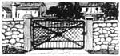

THE farmer who has not the means or the run ning water necessary to equip a bath room in his home, but who desires to make himself comfortable after his day's work in the hot sun, can make a shower bath at very slight expense.
A corner in the barn or at the end of the back porch may be made into the necessary room, which should be four or five feet wide and seven feet long. The floor may be cemented over the boards already there, but a hole must first be bored in the floor and a drainage pipe fixed to carry away waste water.
Mix the cement as for any other work that comes in contact with water. Have the floor concave slightly toward the drain pipe in the center and extend in a concave circle about four or five feet in diameter, depending upon the size of the room. At the front end of the room make a level cement floor with just enough slant for drainage; this will be used as a place to dress after the shower.
Water must be conveyed from a tank or barrel set higher than the top of the room. A shower spray may be purchased at any plumbing shop and attached to the ceiling directly over the center of the drainage vent.
Make the connection with the water supply, put on a valve to turn the water on and off, and the room is complete.
If no other water supply is available a barrel can be set up high enough to give the desired fall and attached to one of the down spouts coming from a nearby roof. If the supply tank is exposed to the sun the water will be given the desired temperature for bathing, or if the shower is desired for all the year arrangements could be made to connect it with hot water,
PROBABLY the best method of removing warts from a dog is by ligation. A well-waxed silk thread should be used. The tying should be done at the base of the wart, round its pedicle, and the string should be drawn tightly; the string will cut through in a few days and the growth will drop off. If there are several warts in one group it would be better to tie only one at a time.
A. E. J.
THE question is sometimes asked: "Shall I feed ground oats or whole oats to my horses? " While we know of no figures showing the comparative feeding value of the two kinds of feed, we believe that it pays to crush the oats which are fed to horses while they are working hard. The crushed oats cannot be eaten so quickly as whole oats and therefore are likely to be better masticated.
J. L. E.
Soil for Greenhouse Lettuce
I should like some advice on soil for my greenhouse lettuce. If I put good soil in the greenhouses and cover it with horse manure and keep it well wet down through the sum inmerit is in better shape for the second winter than it was the first. How many years can this be done? Does a sufficient amount of the fertilizing elements of the manure seep through to keep up soil fertility?
L. H. B., Mo.
YOUR plan for the preparation of greenhouse soil for lettuce has been tried out very thoroughly by the Ohio Experiment Station. You will find that mulching heavily with horse manure early in the spring, and then watering often enough during the summer to keep the whole bed moist, will do a great deal toward suppressing diseases that may attack the crop. The plan should be more generally used.
Not less than four inches of horse manure should be spread evenly over the beds in the spring; in the fall all the coarse particles of manure are raked from the beds and the remainder worked into the soil.
This plan, however, although it is commendable, is not generally followed in Eastern greenhouses. The usual plan is to spade decayed horse manure into the beds in December or just before starting the crop. When steam sterilization is practiced the manure is usually added before the steam is used. Near Boston, greenhouse soils are from twelve to eighteen inches deep, and a large quantity of manure is spaded into the soil just before planting the beds.
R. L. W.
Plowing Newly Cleared Land
On our farm in Delaware we have just finished grubbing some worthless gum trees that overgrew twelve acres of the land. Of course, some roots are left and the farmer claims that he cannot plow with his ordinary horses and plows. Do you think it will be well to have a tractor and gang to do the work? On part of this ground we wish to plant a small apple and peach orchard. Are iron shavings, scrap iron or tin beneficial to peach trees?
A. R. S., Pa.
YOUR land may be plowed by one of two methods. First, a strong, steady team driven by a patient driver who will take plenty of time will do excellent work, even among stumps, with what is known as a new-land breaking plow, which is made especially for this purpose. Of course, it is necessary to have plenty of horse power and the plowman will have to exercise considerable patience.
The second method you may employ is to use a tractor for pulling a deep-tilling machine, which is really a disk plow designed for deep plowing and subsoiling combined. This plow will cut off roots of considerable size and at the same time will turn the land well. It may be operated either by horses or by tractor, although the latter is more satisfactory if large, heavy horses are not available.
It is hardly likely that land in your section is lacking in iron, as it is only a few miles from that point to an old iron mine It is claimed that iron will add color to the fruit of peach trees, yet I hardly think it would pay to invest in iron shavings for this purpose. Use basic slag as a source of phosphoric acid and you will get all the iron necessary.
A. E. G.
A FAMOUS SALAD
It was at Coronado Beach that we enjoyed our first mandarin salad. Other popular coast resorts serve similar fruit salads, in which the principal point of deliciousness lies in the generous use of mandarins or tangerines.
Eight tangerines were used to serve twelve people. The carpels of the fruit were separated; and when free from all skin and seeds these were mixed with a big California apple cut into cubes. A bit of spicy apricots or prunellas sliced or cut into small cubes, or any other seasonable fruit that is spicy, will give the" just-right " flavor. If the fruits lack the desirable spice, lemon juice may be generously sprinkled over the salad. The big reddish Tokay grapes, quartered and seeded, also form a tempting part of the salad, which is served on crisp lettuce leaves, sprinkled with a finely shredded sweet red or green pepper and dotted with mayonnaise dressing.
When served at home, "back East," later, in pie-cherry time, we used a quantity of quartered and seeded cherries to take the place of the grapes, and canned apricots or canned pears sprinkled with lemon juice and cut into cubes were added to the apples and tangerines. With these dainty little sweet oranges forming the main part of the salad, various combinations of other fruits may be added, according to season, that will delightfully recall the tempting flavor of the salad served in the home of the luxuriant semitropical fruits.
DATE-NUT TORTE
Dates are good for the children as well as for the grown-ups. So are nuts of various sorts. Fortunately dates and nuts may be secured in every part of our great country and anyone may follow the recipe of (latenut torte as served at its best in San Diego. To make it the good cooks of California break into a mixing bowl two eggs, and after beating slightly they add a cupful of granulated sugar, and beat all together until thoroughly creamed. A generous cupful of dates seeded and cut into small pieces and a cupful of chopped nut meats are then added and creamed into the stiff mixture. A very little sifted flour is necessary to bring this to the right consistency. About a third of a cupful of flour sifted with one teaspoonful of baking powder and a little salt is beaten with the eggs, sugar and nuts, and the whole is poured into a broad, shallow cake pan, well greased and floured to keep the mixture from sticking. After baking in a moderate oven for about half an hour, the date-nut torte is sprinkled with lemon juice and set aside to cool. It should be served cold with whipped cream.
Various nut meats are used in the California recipe, but no special sort is essential. In Eastern sections the English walnuts and our rich-meated black walnuts will prove the very best sorts; and the dried dates of soft quality will be delicious with these nuts. With homemade ice cream or frozen custard, the date-nut torte will make a delicious dessert.
|
|
 |
|
|
|
|
|